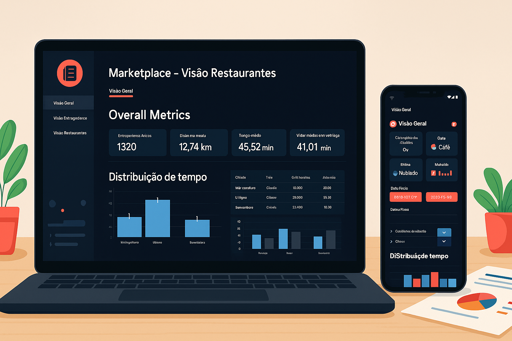
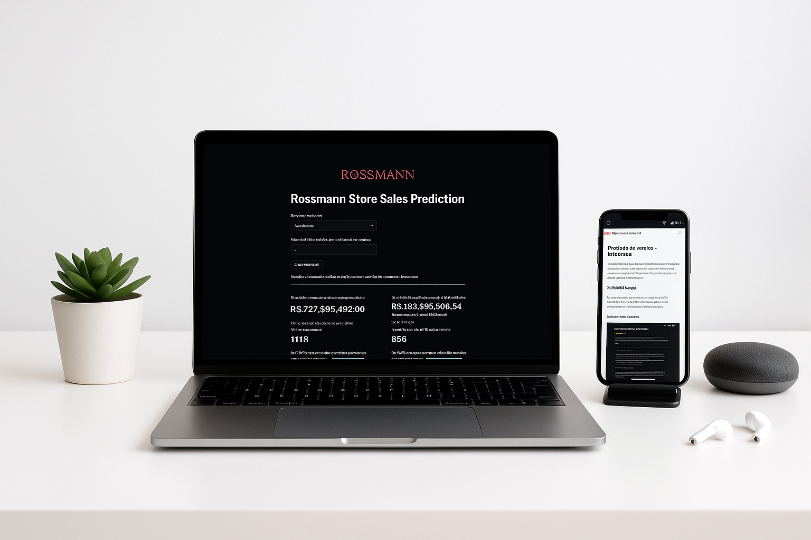

Dashboard operacional para marketplace de entregas
Painel interativo construído sobre dados de uma operação fictícia de delivery na Índia, com foco em monitoramento de KPIs operacionais (entregadores, restaurantes e pedidos). O projeto cobre o pipeline completo, do tratamento dos dados ao deploy em produção via Streamlit Cloud.
Tecnologias: Python, Pandas, Plotly, Streamlit, Streamlit Cloud e GitHub.

Previsão de vendas para rede de farmácias Rossmann
Sistema de previsão de faturamento das próximas 6 semanas para qualquer loja da rede, voltado a apoiar decisões de planejamento estratégico. Após comparar Linear Regression, Lasso, Random Forest e XGBoost via cross-validation, escolhi XGBoost pelo equilíbrio entre desempenho e custo computacional. Random Search para tuning levou a uma melhoria expressiva: acurácia de 74,97% para 86,28% (MAPE 13,72%), com erro médio caindo de R$ 1.685 para R$ 955 por previsão. O modelo foi exposto via API Flask e consumido por um app Streamlit que permite consultar a previsão por loja.
Tecnologias: Python, Pandas, Scikit-Learn, XGBoost, Random Search, Flask, Streamlit, Streamlit Cloud e GitHub.
Nem todo problema precisa de Machine Learning: análise para loja de jogos
Projeto pessoal motivado por um problema real: ajudar um amigo a compor o estoque inicial de uma loja de jogos de tabuleiro. Construí uma proxy de demanda (demanda_score) a partir de features do dataset, fiz análise exploratória pra entender o que influencia a procura, e gerei uma recomendação de 20 jogos prioritários para o estoque inicial. Avaliei a viabilidade de Machine Learning e concluí que o problema não exigia ML — uma análise estatística direta entregava mais valor com menos complexidade. Artigo completo no Medium.
Tecnologias: Python, NumPy, Pandas e Scikit-Learn.